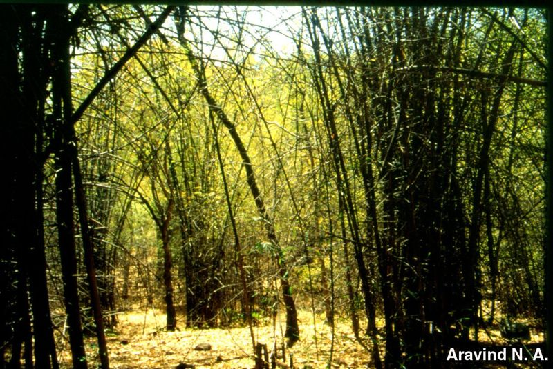

|
ECONOMICALLY
IMPORTANT PLANTS OF INDIA |
| Under-utilized Food and Fodder species and their wild relatives | Contributed by Ms.M.L Annapurna And Dr. Dhanapal, UAS, Bangalore |
Dendrocalamus strictus Nees.

Correct Name
: Dendroclamus strictus Nees
Family : Graminae
Synonyms : Bambos stricta, Roxb.
Common Names :
English: Male bamboo, Solid bamboo
Hindi: Bans kaban, bans khurd, narbans, Baans, Bans, Bans Narbans, Kaban,
Bengali: Karail
Malayalam: Kal mungil
Tamil: Kalmungil
Telugu: Sadonapa veduru, Vansha,
Kannada: Kiri bidiru, Gandu bidaru
Marati: Bhariyel, Bansa,Kania bans, Kamia bans, Manvel, Mes, Velu.
Oriya:Salia bhanso, salimbo bhanso.
Trade name: Manwal.
HABIT & HABITAT
A densely tufted bamboo with strong, elastic,
thick-walled or solid culms varying in size according to locality. It is found
in deciduous forests and in dry or moderately dry regions practically all over
India up to 3,500 ft. It occurs sometimes gregariously almost to the exclusion
of tree growth; more usually it is found as an understorey or a mixture with
deciduous tree species.
It is commonly
found in the foot hills, deciduous forest, Drier hill tracts, dry deciduous
forest,dry scrub, Edges of Forests & Forests, Forests, Ghats, Hedges, Hill
forests, Hill slopes, Hilly areas,hilly tract, Lower Slopes of the Ghats, moist
deciduous forest, Open areas, open forest, Plains, Road sides, Rocky places,
Sal forests, Slopes, Tropical Forests, valleys and Villages.
BioticZone: Deccan Plateau, Konkan, Konkan plain, West Coast and Western Ghats.
Soil: It prefers moist clayey soils.
Availability :
Misc: Achanakmar, achrecreek, Ahobilam,
Ambikapur, Baghnadi, Bittergaon range, Bombay Presidency, Chandanathode, Chelama,
Chipperbari-Abu hills, Corbett National Park, Deodongra, Dolara forest, Garampani,
ghotge, Girnar Hills (Saurashtra), Girnar road (Saurashtra), Gobardhana, Kharbi
range, Kushalgarh, Mahaballeshwar, mahadev hill, malwan, Mantralakanama, Matheran,
mhatardeo, Nagarahole, Nallamalais, Nerur, Pakistan to Burma, Panch Mahal, Peapaly,
Peccheruvu, Penganga felling series, phondaghat, Puna pathar forest, Punjur
ghats(B.R.Hills), ramghat, Reserve forest, Saivila, Nilambur, Shuntiguthi, Sitanadi,
Sukhalahatti, Thana paidi, Thevankarai Aar, Tipeshwar R.F., Toda Rai Singh R.F.,
Tondwal, Vazhikadavu - Gudalloor roadside, Nilambur, Village of Katraj ghats.
Country: Bhutan, Burma, Ceylon, India, Java, Malaysia, Nepal and Pakistan,
Zone: Central, East, North, North East, South and West.
State: Andhra Pradesh, Arunachal Pradesh, Assam, Bihar, Goa Daman Diu, Gujarat,
Himachal Pradesh, Karnataka, Kerala, Madhya Pradesh, Maharashtra, Meghalaya,
Punjab, Rajasthan, Sikkim, Tamil Nadu and Uttar Pradesh.
District: Balaghat, Bangalore, Banswara, Bastar, Bilaspur, Cannanore, Champaran,
Chamrajnagar, Chandrapur, Chengalpattu, Chikmaglore, Chittaurgarh, Coimbatore,
Dakshin Kannada, Daman, Dharmapuri, Dharwad, Dungarpur, Garhwal, Hassan, Hoshangabad,
Indore, Jabalpur, Jowai, Junagadh, Kodagu, Kota, Kurnool, Malappuram, Mandi,
Medak, Mysore, nagerhaveli, Nasik, Nilgiri, Palni hills,m Pune, Raigad, Raigarh,
Raipur, Rajnandgaon, Rewa, Salem, Satara, Seoni, Sidhi, Sindhudurg, Sirohi,
Tirunelveli, Tonk, Uttar Kannada and Yawatmal.
Taluk: Chamarajnagar, Kankavli, Kudal, Pachmarhi and Sawantwadi.
Status :
DIAGNOSTIC
FEATURES
Culms usually 20 to
50 ft. high 1-3 in. diameter, somewhat swollen at the nodes and bearing in open
situations, leafy, often deflexed branches from the base; upper branches curved
and drooping; internodes 12-18 in. long; culm sheaths variable. Flowering irregular
and sporadic, at times gregarious over large areas. Seeds similar in form to,
but about half the size of, unhusked wheat; weight, 800-1,560 seeds per oz.;
REPRODUCTIVE BIOLOGY
Breeding System :
Phenology :
The flowers appear from November to February and seeds fall to the ground from
April to June; under natural conditions they germinate in the beginning of the
rainy season and seedlings survive in abundance on bare ground, particularly
on newly exposed soil. They generally benefit by a certain amount of protection
from sun, but dense shade and heavy weed growth are detrimental. In adult plants,
new culms are normally produced in the rainy season and in years of favorable rainfall as many as 20 new culms may be produced from fair-sized clumps. And
also there is report of flowering in May - June (01)
Pollinators:
Seed Biology :
Seed Germination:
Male bamboo may be artificially propagated by seed, by division, by offsets,
by stem or rhizome cuttings or by layers. Direct sowing may be carried out in
lines or patches, the seed rate for patch sowing being 1 lb. per acre. Seedling
transplanting is, however, preferable to direct sowing. Seeds are sown in nursery
beds in drills 9 in apart; a bed 35 ft. X 5 ft. requires 1lb. of seeds and about
4,000 seedlings are produced. Transplanting is done during the first rainy season
when seedlings are 6-18 in. high. The roots are kept covered by earth to prevent
wilting and seedlings are planted in prepared pits, 9-12 in. deep X 6-9 in
diam.
spaced 10-15 ft. apart. Plants raised from rhizomes grow more rapidly and culms
attain exploitable size in 6 years, which is about half the time taken under
natural regeneration. Germinating capacity,
25-80%.
Climate and soil: Male bamboo is the hardiest
of all the Indian bamboos and grows practically on all kinds of soil provided
it is well-drained. It thrives best on porous, gravelly and sandy loam on a
bed of granite rock. In dry localities and on poor soil, the culms, though small
in size, are solid or nearly so, whereas in moist and fertile localities, although
they reach larger dimensions they are, as a rule, hollow. This species stands
drought and frost better than any other bamboo.
MAJOR PESTS & DISEASES
Pests:
Estigmena chinensis Hope, Cyrtotrachelus longimanus F. ( = C.
longipes F.) and a few other insect pests have been recorded on growing
culms. Seedlings are damaged by rats, squirrels and porcupines, and young shoots
are readily browsed by hare, deer, goats and cattle.Treatment witha 16% solution
of zinc chloride for 5 to 6 days affords fresh bamboos adequate protection against
termites, borers and fungi.
Diseases: Some of the minor fungal diseases are reproted.
Parts used
Culms are by craftmans, and also tender shoots are cooked and relished. Almost
all the plant parts are useful, so why it is called as poor mans timber.
Uses
Harvesting Practices
Fellings are done in cycles of 2-4 years, the best rotation being 3 years; all
the culms of the year are retained together with about 8 mature culms per clump
and the rest cut 1-2 ft. above the base. Cutting is best carried out when the
leaves begin to fade and may be continued up to the time the culms become leafless.
Bamboos felled in the cold season are generally stiffer and stronger than those
felled in the hot season and mature bamboos are 40-50 % stronger than young
ones in either season.
When freshly cut, the culms are bluish green in colour changing to yellowish
green on drying. They can be air- or kiln-seasoned without much degrade. Immature
pieces suffer excessive
shrinkage at internodes and are deformed. D. strictus is valued greatly
because of its thin straight culms which are quite strong for general use.
Produce and Products
Paper,pulp, active carbon
Other Species:
Other species of the genus found wild or cultivated in India are :
D. sikkimensis. Gamble (NEPAL-Tina, vola; EPCHA-Pagriang),
D. hookeri. Munro (NEPAL-Till; ASSAM-Ussey, assey denga),
D. patellaris. Gamble (LEPCHA-Pagjiok),
D. omembranaceus. Munro,
D. giganteus. Munro and D. brandisii. Kurz. The last 2 species are among thelargest
of the bamboos.